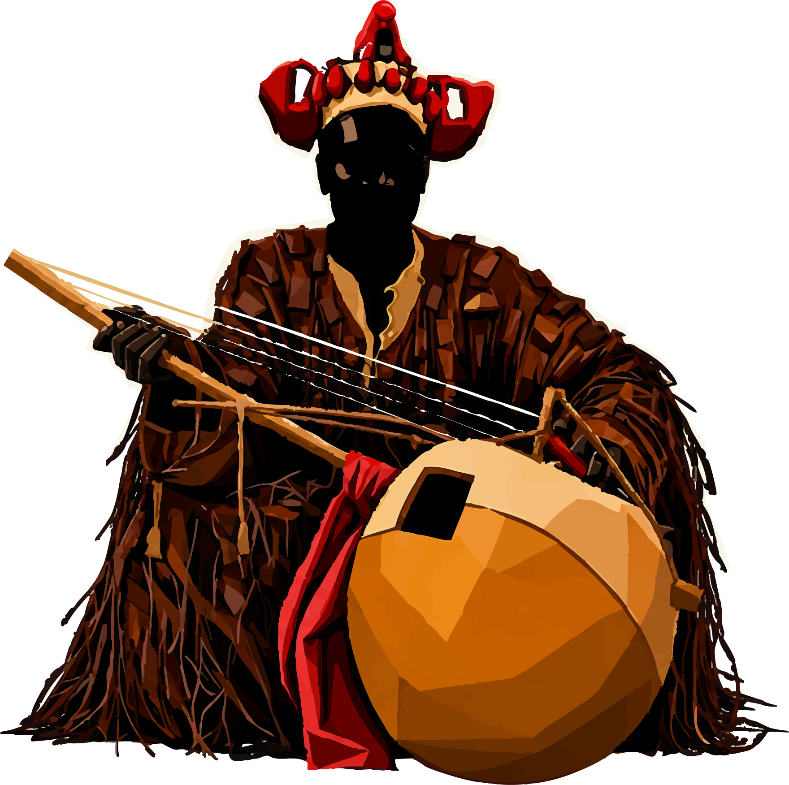

La mémoire orale ne doit pas s'éteindre.
Le Congo possède un patrimoine exceptionnel : traditions, langues, récits, histoires. Une part de cette mémoire disparaît à chaque génération. Griot Sambolé rend au griot son rôle de gardien de la mémoire, de transmetteur et de témoin de son époque.
Au fil des générations, une partie importante de notre patrimoine oral s'efface. Les griots, détenteurs des récits et des savoirs ancestraux, disparaissent progressivement, tandis qu'une grande partie de la jeunesse congolaise grandit davantage au contact de références culturelles extérieures que de ses propres histoires.
Griot Sambolé naît de cette volonté de réappropriation de notre mémoire collective : raconter le Congo par les Congolais.
Préserver et transmettre le patrimoine culturel congolais à travers les contes et légendes.
Réhabiliter le rôle du griot comme vecteur de mémoire, de valeurs et de savoirs ancestraux.
Utiliser l'art comme outil de transmission : narration, théâtre, musique, danse, performances, illustration.
Faire voyager la culture congolaise à travers le monde, en rendant ses histoires et traditions accessibles de manière immersive et contemporaine.
Reconnecter les populations locales à leur héritage culturel et créer un sentiment de fierté et d'identité commune.
Partager la richesse des cultures congolaises avec le continent, renforcer les échanges culturels et promouvoir la diversité africaine.
Présenter la culture congolaise au monde entier, contribuer au rayonnement culturel de la RDC et sensibiliser un public global à ses valeurs et ses histoires.
Les récits, les langues, les gestes. Documenter avant que la génération qui les porte ne se taise.
Des aînés vers les enfants. Ateliers, contes, jeux : la transmission se fait en jouant.
Familles, artistes, diaspora. Un lieu où les Congolais racontent le Congo eux-mêmes.
Cœur de cible : connectée aux réseaux sociaux, en quête d'identité et de nouvelles formes d'expression culturelle.
Étudiants, chercheurs et passionnés du patrimoine africain.
Illustrateurs, scénaristes, animateurs, designers : visibilité, networking et opportunités.
Une expérience éducative et divertissante, à transmettre en famille.
Centres culturels, écoles, ONG : opportunité de partenariat et de visibilité.
Le griot, gardien de la mémoire
Historien, conteur, musicien et médiateur : le griot conserve la généalogie d'un peuple et la restitue en public. Griot Sambolé remet cette fonction au centre — sur scène, dans les ateliers et dans le carnet de récits.

Centre Culturel Congolais — Le Zoo
Kinshasa, République Démocratique du Congo — 17 & 18 octobre 2026.
Soirée dès 18h
Navettes centre-ville
Zone restauration
contact@griotsambole.cd